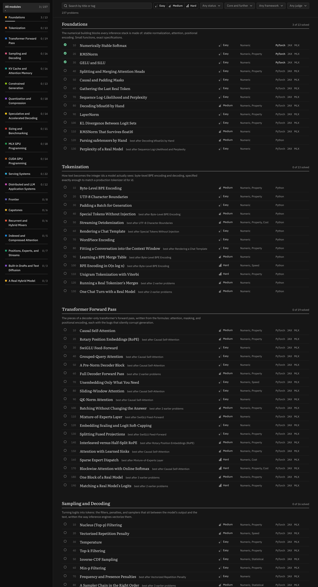
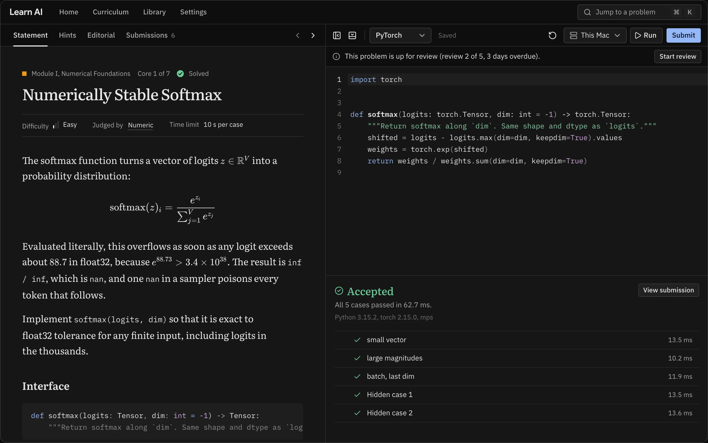
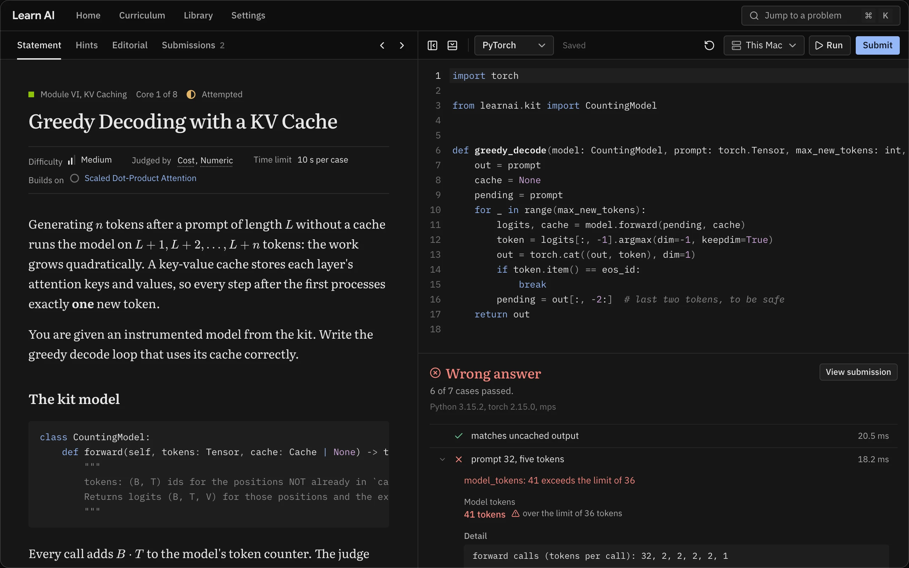
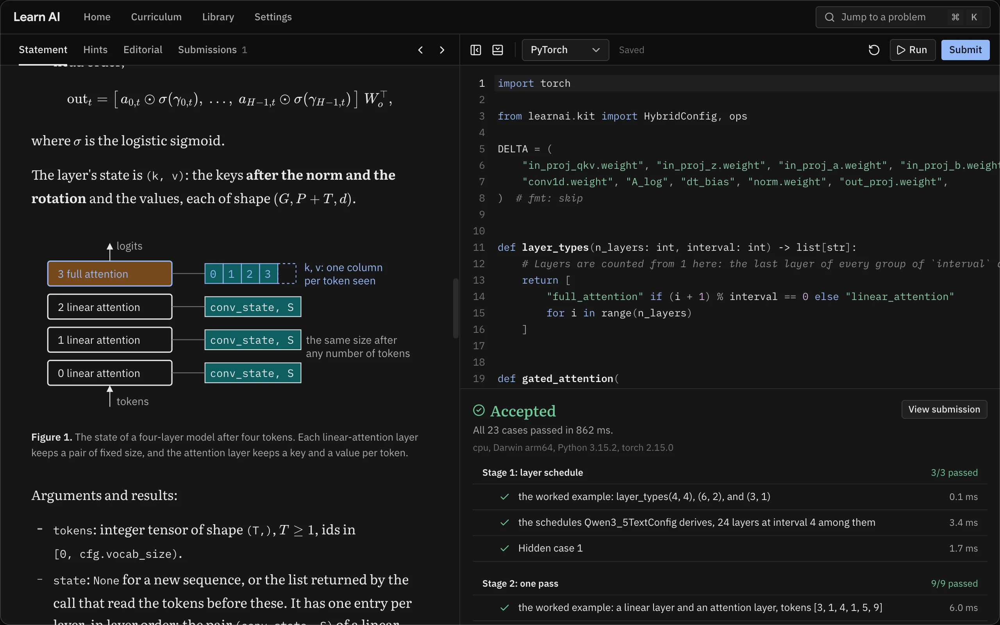
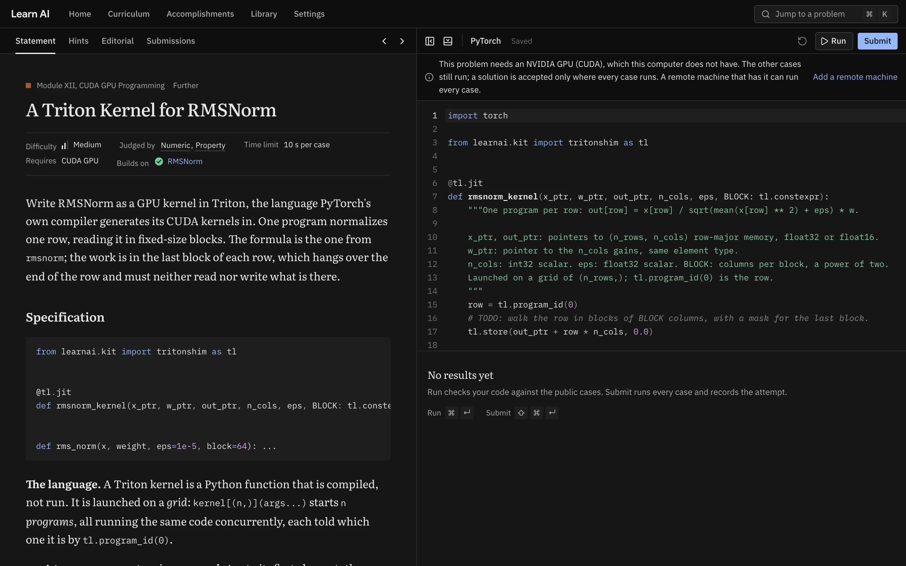
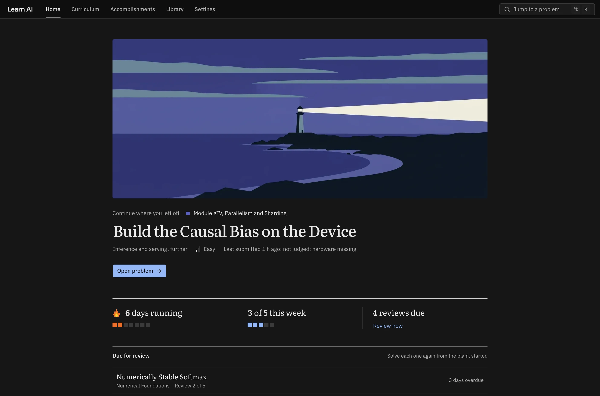
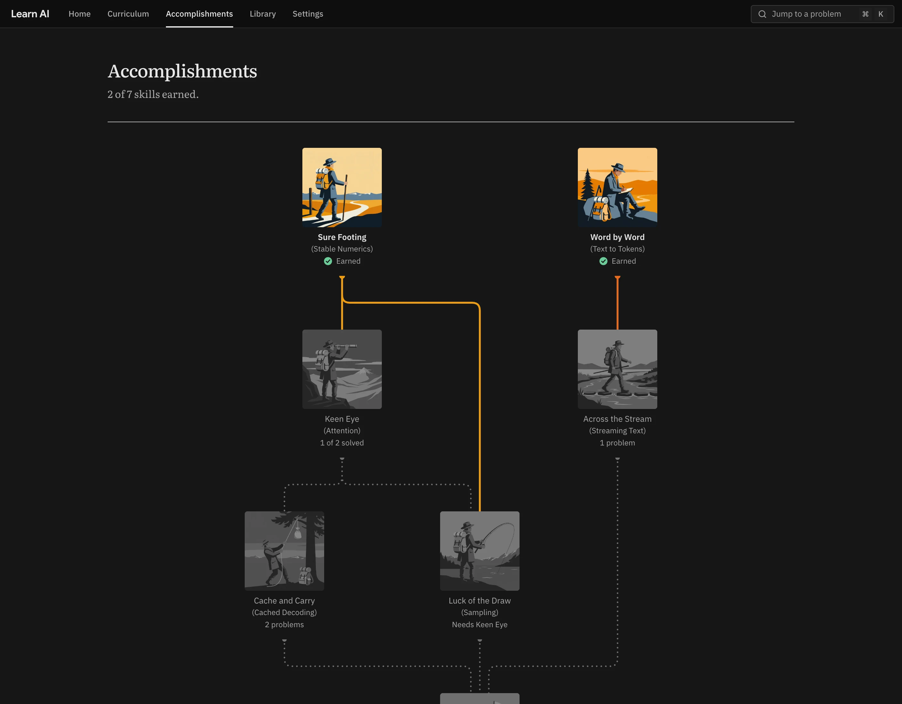

Learn AI
Learn how to implement frontier AI architectures and systems from the ground up.
macOS on Apple silicon · Linux x86_64 and arm64 · Windows x64

252 problems in 21 tracks
Inference and serving
16 tracks, 228 problemsFrom tokenizing, forward pass, sampling, caching, quantization, to serving.
Model architectures
5 tracks, 24 problemsFrontier architectures: Recurrent and hybrid mixers, indexed and compressed attention, new block parts, built-in drafts and text diffusion, and one real hybrid model.
Statement, editor, judge
Solve Problems
Read the problem statement, write the solution in the built-in IDE, run the solution locally (or on your own provided cloud GPUs), and master the concept.

Work is counted
The kit's model counts the tokens it is given. This decode loop returns the right text and still fails: it feeds the cache 41 tokens where 36 are allowed.

Figures
Statements are illustrated where a drawing says it faster. Here, the state a hybrid decoder keeps per layer after four tokens.

GPU code
MLX problems run on the Apple GPU. CUDA problems, down to Triton kernels, check their logic on the CPU and run the rest on a remote NVIDIA machine you add.

Streaks, reviews, skills


- Installs
- The desktop app, problems, Python 3.15, PyTorch, and JAX (and MLX on Apple silicon).
- Size
- 3 GB on macOS, 2 GB on Windows, 6 GB on Linux
- Location
- Everything in
~/.learnai - Leaves alone
-
No
sudo.PATH, shell profile, registry, and your own Python are untouched - Update
- Run the command again. Solutions and progress are kept
- Uninstall
sh ~/.learnai/uninstall.sh